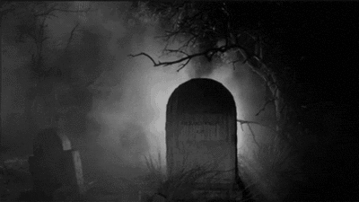
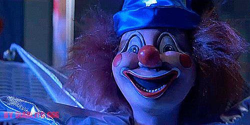
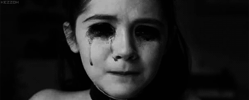

LA APUESTA DEL CEMENTERIO

La siguiente leyenda puede variar, como es normal en la mayoría de las historias populares. Los protagonistas suelen ser una chica con un vestido o un chico con una capa, pero la trama es la misma. Desde FCINCO, nos quedamos con la joven.
La protagonista, cuyo nombre se desconoce, era una joven tímida. Por el trabajo de su padre, ella y su familia cambiaban constantemente de ciudad y de amigos (Ver mas).
LA SONRISA DEL PAYASO

La historia de la sonrisa del payaso es un clásico en los colegios mayores de Madrid, aunque se ha ido extendiendo al resto la comunidad universitaria.
Una joven esperaba el autobús de noche en una de las marquesinas de la zona de Metropolitano, el principal núcleo de colegios mayores de la capital. La zona está rodeada de los parques que forman el campus universitario y, junto con las facultades vacías, logran un perfecto escenario de película de terror.
VERÓNICA ANTE EL ESPEJO

La leyenda de Verónica es una de las más populares entre quienes disfrutan de ese escalofrío de terror en la espalda. De nuevo, su origen y autoría permanecen desconocidos. La historia cuenta que una niña llamada Verónica participó en una sesión de Ouija sin tomarse en serio la invocación, y fue asesinada en extrañas circunstancias delante de todos los participantes.
Según una de las versiones, ya que la historia varía según el lugar en el que se escuche, una silla salió volando por la habitación y golpeó a la joven por la espalda, ocasionándole la muerte. Otra versión apunta que fueron unas tijeras las que salieron volando y provocaron la muerte de la joven por apuñalamiento. Lo que es común a todas es el ritual que conlleva esta historia.